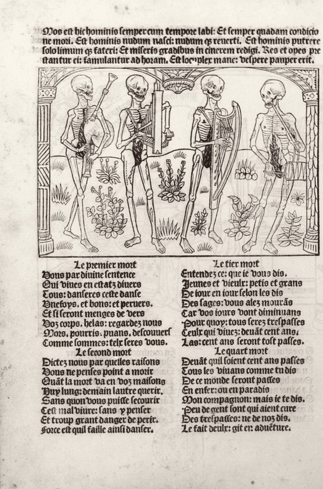

Spirale de Gorse · Troisième exemple
L’Épitaphe Villon, dite Ballade des pendus
Les pendus parlent aux vivants, et les nomment frères. On part de ce qui saute aux yeux, puis chaque tour de la spirale de Gorse, conçue par Madame Carole Paoli Pompougnac, s’enfonce vers le sens.
Le texte intégral figure ci-dessous, en moyen français et en français moderne, vers à vers. Puis la spirale remplie, les figures de style, et les fiches à télécharger.

Le poème
Le texte, vers à vers
Le moyen français de Villon figure en italique. En regard, une traduction en français moderne, établie pour cette fiche, vers à vers. Les vers du refrain sont un peu plus marqués.
François Villon
François Villon, « L’Epitaphe en forme de Ballade que feit Villon pour luy et ses compagnons, s’attendant estre pendu avec eulx », Œuvres complètes, Paris, A. Lemerre, 1876, p. 101-102. Texte du domaine public, d’après Wikisource, « Ballade des pendus ». Traduction en français moderne établie pour cette fiche, vers à vers.
- Premier dizain
- 1Frères humains, qui après nous vivez,Frères humains, qui vivez après nous,
- 2N’ayez les cueurs contre nous endurciz,N’ayez pas le cœur contre nous endurci,
- 3Car, si pitié de nous pouvres avez,Car, si vous avez pitié de nous, pauvres,
- 4Dieu en aura plustost de vous merciz.Dieu aura plus tôt merci de vous.
- 5Vous nous voyez cy attachez cinq, six :Vous nous voyez ici attachés, cinq, six :
- 6Quant de la chair, que trop avons nourrie,Quant à la chair, que trop nous avons nourrie,
- 7Elle est pieça devorée et pourrie,Elle est depuis longtemps dévorée et pourrie,
- 8Et nous, les os, devenons cendre et pouldre.Et nous, les os, devenons cendre et poudre.
- 9De nostre mal personne ne s’en rie,Que personne ne se rie de notre mal,
- 10Mais priez Dieu que tous nous vueille absouldre !Mais priez Dieu que tous nous veuille absoudre !
- Deuxième dizain
- 11Se vous clamons, frères, pas n’en devezSi nous vous appelons frères, vous n’en devez
- 12Avoir desdaing, quoyque fusmes occisAvoir dédain, bien que nous ayons été mis à mort
- 13Par justice. Toutesfois, vous sçavezPar justice. Toutefois, vous savez
- 14Que tous les hommes n’ont pas bon sens assis ;Que tous les hommes n’ont pas le bon sens assis ;
- 15Intercedez doncques, de cueur rassis,Intercédez donc, d’un cœur rassis,
- 16Envers le Filz de la Vierge Marie,Auprès du Fils de la Vierge Marie,
- 17Que sa grace ne soit pour nous tarie,Afin que sa grâce ne soit pour nous tarie,
- 18Nous preservant de l’infernale fouldre.Nous préservant de l’infernale foudre.
- 19Nous sommes mors, ame ne nous harie ;Nous sommes morts, que personne ne nous tourmente ;
- 20Mais priez Dieu que tous nous vueille absouldre !Mais priez Dieu que tous nous veuille absoudre !
- Troisième dizain
- 21La pluye nous a debuez et lavez,La pluie nous a trempés et lavés,
- 22Et le soleil dessechez et noirciz ;Et le soleil desséchés et noircis ;
- 23Pies, corbeaulx, nous ont les yeux cavez,Pies et corbeaux nous ont crevé les yeux,
- 24Et arrachez la barbe et les sourcilz.Et arraché la barbe et les sourcils.
- 25Jamais, nul temps, nous ne sommes rassis ;Jamais, en aucun temps, nous ne sommes en repos ;
- 26Puis çà, puis là, comme le vent varie,Puis çà, puis là, selon que le vent varie,
- 27A son plaisir sans cesser nous charie,À son plaisir, sans cesse, il nous charrie,
- 28Plus becquetez d’oyseaulx que dez à couldre.Plus becquetés d’oiseaux que dés à coudre.
- 29Ne soyez donc de nostre confrairie,Ne soyez donc de notre confrérie,
- 30Mais priez Dieu que tous nous vueille absouldre !Mais priez Dieu que tous nous veuille absoudre !
- Envoi
- 31Prince Jesus, qui sur tous seigneurie,Prince Jésus, qui avez seigneurie sur tous,
- 32Garde qu’Enfer n’ayt de nous la maistrie :Gardez qu’Enfer n’ait de nous la maîtrise :
- 33A luy n’ayons que faire ne que souldre.À lui, n’ayons rien à faire ni rien à payer.
- 34Hommes, icy n’usez de mocquerieHommes, ici n’usez pas de moquerie,
- 35Mais priez Dieu que tous nous vueille absouldre !Mais priez Dieu que tous nous veuille absoudre !
Source du texte original : Wikisource, « Ballade des pendus », d’après l’édition Lemerre, 1876. Traduction en français moderne établie pour cette fiche, vers à vers.
La spirale remplie
Partir de ce qui saute aux yeux
À l’extérieur, l’idée. À l’intérieur, les numéros de vers qui la soutiennent. On commence toujours par « Je remarque » : ici, l’adresse « Frères humains ».
![Spirale remplie des cinq étapes sur L’Épitaphe Villon, dite Ballade des pendus. Je remarque l’adresse Frères humains, les morts qui nous parlent, aux vers 1 et 5. Je repère une ballade : trois dizains, un envoi, un refrain aux vers 10, 20, 30 et 35. Je comprends le réalisme macabre et l’appel à la pitié, aux vers 9 et 21 à 24. J’anticipe une prière, vers le Fils de la Vierge et le Prince Jésus, aux vers 16 à 18 et 31 à 35. Je trouve le sens : une fraternité avec ceux qu’on a pendus, une pitié qui refuse le mépris sans effacer la peine, et cette limite : le poème demande l’absolution, non l’innocence.](../img/spirale-gorse-villon.svg)
- 1
Je remarque. « Frères humains » : les morts nous parlent, et nous nomment frères. C’est ce qui saute aux yeux dès le premier vers, confirmé par « cy attachez cinq, six ». Appuis : v. 1 ; v. 5.
- 2
Je repère. Une ballade : trois dizains de décasyllabes, un envoi de cinq vers, un refrain qui ferme chaque strophe. Appuis : v. 10, 20, 30 et 35 ; v. 31 à 35.
- 3
Je comprends. Le poème montre les corps sans fard, et demande pourtant qu’on ne s’en rie pas. Le réalisme macabre sert l’appel à la pitié. Appuis : v. 21 à 24 ; v. 9 ; v. 34.
- 4
J’anticipe. La finalité est une prière. On intercède auprès du Fils de la Vierge Marie ; l’envoi s’adresse au Prince Jésus, pour qu’Enfer n’ait pas la maîtrise. Appuis : v. 16 à 18 ; v. 31 à 33.
- 5
Je trouve le sens. Problème : une fraternité avec ceux qu’on a pendus est-elle encore possible ? On peut défendre une pitié qui refuse le mépris, sans effacer la peine (« occis par justice »). Limite : le poème demande l’absolution, non l’innocence, et prévient « Ne soyez donc de nostre confrairie » (v. 29). Appuis : v. 12-13 ; v. 29 ; v. 10 et 35.
À emporter
Fiches à télécharger
Le texte bilingue, la spirale remplie et les figures de style, en pdf, docx et odt.